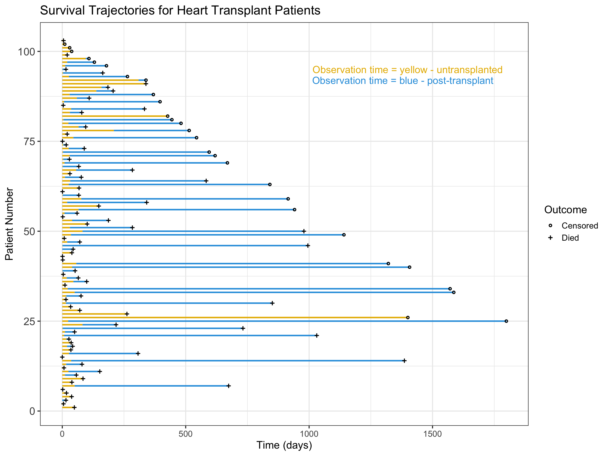
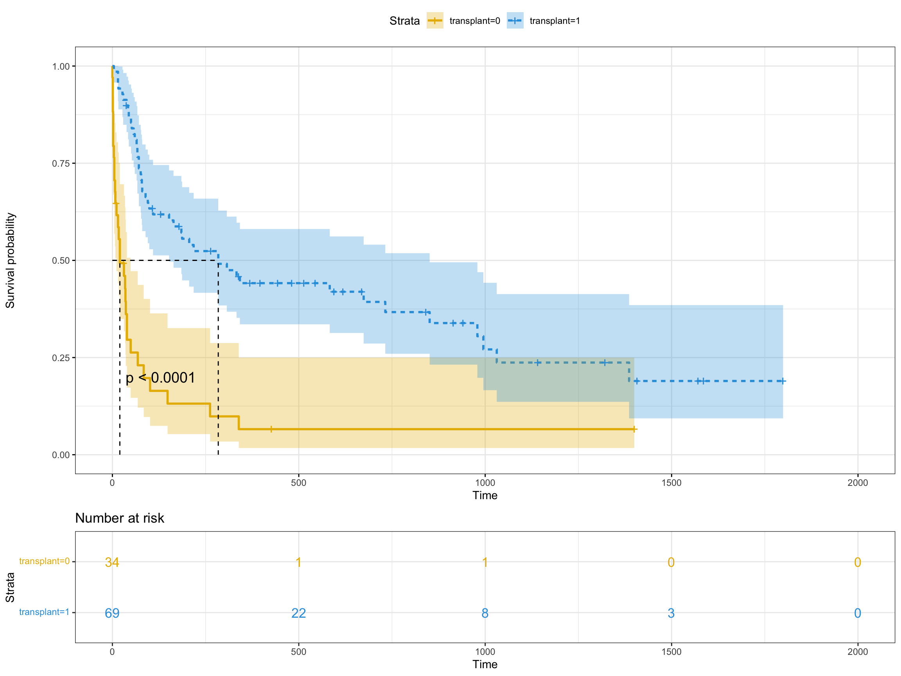

| birth.dt | accept.dt | tx.date | fu.date | fustat | surgery | age | futime | wait.time | transplant | mismatch | hla.a2 | mscore | reject |
|---|---|---|---|---|---|---|---|---|---|---|---|---|---|
| 1937-01-10 | 1967-11-15 | NA | 1968-01-03 | 1 | 0 | 30.84463 | 49 | NA | 0 | NA | NA | NA | NA |
| 1916-03-02 | 1968-01-02 | NA | 1968-01-07 | 1 | 0 | 51.83573 | 5 | NA | 0 | NA | NA | NA | NA |
| 1913-09-19 | 1968-01-06 | 1968-01-06 | 1968-01-21 | 1 | 0 | 54.29706 | 15 | 0 | 1 | 2 | 0 | 1.11 | 0 |
| 1927-12-23 | 1968-03-28 | 1968-05-02 | 1968-05-05 | 1 | 0 | 40.26283 | 38 | 35 | 1 | 3 | 0 | 1.66 | 0 |
| 1947-07-28 | 1968-05-10 | NA | 1968-05-27 | 1 | 0 | 20.78576 | 17 | NA | 0 | NA | NA | NA | NA |
| 1913-11-08 | 1968-06-13 | NA | 1968-06-15 | 1 | 0 | 54.59548 | 2 | NA | 0 | NA | NA | NA | NA |
Immortal time bias - “The fallacy that never dies” (Part 2)
code
analysis
modelling
survival
visualisation
Let’s investigate immortal time bias with a coded example.
Last week I introduced the concept of immortal time bias and how it can distort associations in your survival analysis, if you naively misclassify unexposed/untreated observation time as exposed/treated. This week I am going to illustrate the concept with some data and R code. It would have been good to analyse the Oscar Winner’s data but as I could not locate that, instead we are going to look at one of the first studies in which immortal time bias was subsequently recognised to be a problem.
he design or analysis will lead to immortal time bias. The first recorded instance of bias from immortal time in epidemiology was in the early 1970s in the context of two cohort studies from Texas and Stanford University (Palo Alto, California) of the benefit of heart transplantation (15, 16). In the Texas Heart Institute study, the survival time of 15 patients who received a heart transplant (mean 111 days, including the waiting time from acceptance for a trans- plant until transplantation) was found to be longer than the survival of 42 potential recipients who were accepted for a transplant but did not receive one (mean 74 days) (15). In the Stanford Heart Transplant study, the survival of 20 pa- tients who received a heart transplant (mean 200 days after transplantation) was found to be longer than the survival of 14 potential recipients who did not receive a transplant (mean 34 days) (16). Gail (17) identified a source of bias in these two studies stemming from a relevant portion of follow-up time— namely, the waiting time of all patients who survived to make it to the transplant—that was not properly accounted for in the data analysis. Indeed, because this portion of the follow-up time was classified as exposed to transplantation instead of unexposed, it offered a guaranteed survival time to the transplanted group. As a result, by not being correctly classified, this immortal time produced an artificial increase in the mortality rate of the reference group, thus suggesting a benefit of heart transplant surgery. In a reanalysis of the Stanford Heart Transplant data, Mantel and Byar (18) found that the apparent major survival advantage of the trans- planted group disappears when the immortal time is prop- erly accounted for by a time-dependent analysis (hazard ratio (HR) 1⁄4 0.93, p 1⁄4 0.9).
Code
# Visualise survival trajectories of random sample of women
jasa$id <- seq(1:dim(jasa)[1])
temp <- jasa
temp$wait.time[is.na(temp$wait.time)] <- temp$futime[is.na(temp$wait.time)]
temp |> # Use this to sort 2 groups in plot
ggplot(aes(x = id, y = futime)) +
geom_linerange(aes(ymin = 0, ymax = wait.time), color = "#E7B800", linewidth = 1) +
geom_linerange(aes(ymin = wait.time, ymax = futime), color = "#2E9FDF", linewidth = 1) +
geom_point(aes(shape = factor(fustat)), stroke = 1, cex = 1, color = "black") +
scale_shape_manual(values = c(1, 3), labels = c("Censored", "Died"), name = "Outcome") +
annotate("text", x = 95, y = 1400, label = "Observation time = yellow - untransplanted", size = 5, color = "#E7B800") +
annotate("text", x = 92, y = 1380, label = "Observation time = blue - post-transplant", size = 5, color = "#2E9FDF") +
ggtitle("Survival Trajectories for Heart Transplant Patients") +
ylab("Time (days)") +
xlab("Patient Number") +
coord_flip() +
theme_bw(base_size = 15) +
theme(axis.text.y = element_text(size = 15))
Code
fit <- survfit(Surv(futime, fustat) ~ transplant, data = jasa)
ggsurvplot(fit,
pval = TRUE, conf.int = TRUE,
risk.table = TRUE, # Add risk table
risk.table.col = "strata", # Change risk table color by groups
linetype = "strata", # Change line type by groups
surv.median.line = "hv", # Specify median survival
ggtheme = theme_bw(), # Change ggplot2 theme
palette = c("#E7B800", "#2E9FDF"))
Call:
coxph(formula = Surv(futime, fustat) ~ transplant, data = jasa)
n= 103, number of events= 75
coef exp(coef) se(coef) z Pr(>|z|)
transplant -1.3234 0.2662 0.2438 -5.428 5.69e-08 ***
---
Signif. codes: 0 '***' 0.001 '**' 0.01 '*' 0.05 '.' 0.1 ' ' 1
exp(coef) exp(-coef) lower .95 upper .95
transplant 0.2662 3.756 0.1651 0.4293
Concordance= 0.668 (se = 0.025 )
Likelihood ratio test= 25.95 on 1 df, p=4e-07
Wald test = 29.47 on 1 df, p=6e-08
Score (logrank) test = 33.38 on 1 df, p=8e-09